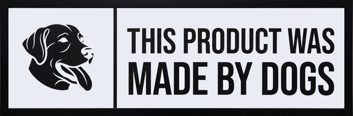

Dogs Radio — 24/7 community radio
Everyone hears the same song. At the same time. Stations built from playlists. True radio. No servers.
Hear it first01 — Stations
A station is a playlist. Drop a playlist link. It broadcasts around the clock, whether you are listening or not.
02 — The one trick
Same song. Same second. Everywhere. One persistent cursor per station lives on the edge. When the track changes, it changes for everyone listening. Not personal playback. Radio.
03 — The room
Talk while it plays. Every station has a live chat room. The crowd is part of the broadcast.
04 — Try the dial
Four stations. One mock broadcast. Simulated now-playing, like the real cursor will drive it.
Tap a station, or use ← → keys while this panel is up.
05 — The engine
The edge runs the station. Workers for the API. Durable Objects for the cursor, alarms, and chat. D1 for the data. Nothing to host, nothing to babysit.
06 — Launch
Be on the first spin. Architecture is written. The build is next. Leave a ping and you hear it launch.

Status: scaffold · architecture written